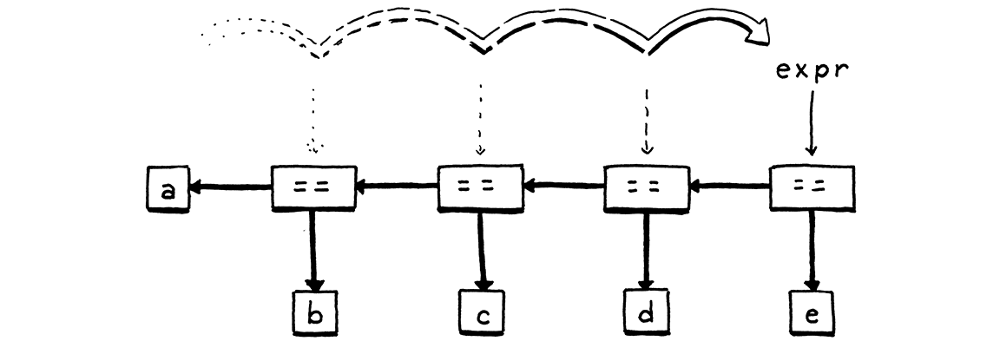

语法解析表达式
语法这东西，连国王都管得住。
莫里哀
本章标志着全书第一个重大里程碑。我们不少人为了从一堆文本里榨出点 意思，凑合着用正则表达式和字符串截取拼了个大杂烩。那代码八成满是 bug，维护起来像头野兽。 而写一个真正的语法解析器——一个错误处理像样、内部结构讲得通、能稳稳当当地嚼穿复杂语法的 语法解析器——公认是门稀罕的手艺。这一章，你会拿到它。
这比你以为的容易，部分原因是我们在上一章里已经提前干掉了不少苦力活儿。 你已经会摆弄形式文法 了。你对语法树也不陌生，而且我们还有几个 Java 类来表示它们。剩下的唯一一块就是语法解析本身 ——把一串词法单元变成那种语法树。
有些计算机教材对语法解析器大加吹捧。上世纪六十年代，计算机科学家们——可以理解，用汇编语言 写代码写累了——开始设计更精巧、更合乎人性的语言，比如 Fortran 和 ALGOL。可惜，它们对当时那些原始计算机来说并不怎么合乎机器。
这些先驱设计的语言，连他们自己都不确定该怎么为它写编译器，然后就一头扎进去做了开创性的工作， 发明出能够应付这些新型大语言的语法解析与编译技术——在那台又老又小的机器上。
经典的编译器教材读起来，简直像是对这些英雄和他们工具的谄媚圣徒传。《编译原理：原理、技术 与工具》的封面上，一条标着「编译器设计的复杂度」的龙，正被骑士挥剑持盾斩杀，盾牌上 写着「LALR 语法解析器生成器」和「语法制导翻译」。他们可真是使劲吹。
稍微自我表扬一下不过分，但事实是：为了给现代机器敲出一个高质量的语法解析器，你并不需要知道 那些东西里的大部分。和往常一样，我鼓励你拓宽自己的知识面、以后再补，但本书省掉了奖杯陈列柜。
6 . 1歧义与语法解析游戏
上一章我说过，你可以像玩游戏一样「玩」一套上下文无关文法，从而生成字符串。语法解析器 玩的是同一个游戏的反向版本：给定一个字符串——一串词法单元——我们把这些词法单元映射到文法里 的终结符上，以搞清哪些规则可能生成了这个字符串。
「可能」这两个字挺有意思。完全可以造出一套有歧义的文法，其中不同的产生式选择会导出同一个 字符串。用文法来生成字符串时，这不太要紧。字符串一旦到手，谁在乎你是怎么走到它的？
语法解析时，歧义意味着语法解析器可能误解用户的代码。语法解析的过程中，我们不光在判断这个 字符串是不是合法的 Lox 代码，还在追踪哪些规则匹配它的哪些部分，好知道每个词法单元属于这门 语言的哪一部分。这是我们上一章凑出来的 Lox 表达式文法：
expression → literal | unary | binary | grouping ; literal → NUMBER | STRING | "true" | "false" | "nil" ; grouping → "(" expression ")" ; unary → ( "-" | "!" ) expression ; binary → expression operator expression ; operator → "==" | "!=" | "<" | "<=" | ">" | ">=" | "+" | "-" | "*" | "/" ;
在这套文法里，下面这个字符串是合法的：
但生成它有两条路。一种走法是：
- 从
expression出发，挑binary。 - 左边那个
expression，挑NUMBER，用6。 - 运算符挑
"/"。 - 右边那个
expression，再挑binary。 - 在这个嵌套的
binary表达式里，挑3 - 1。
另一种走法是：
- 从
expression出发，挑binary。 - 左边那个
expression，再挑binary。 - 在这个嵌套的
binary表达式里，挑6 / 3。 - 回到外层
binary，运算符挑"-"。 - 右边那个
expression，挑NUMBER，用1。
这两种走法产生的字符串相同，但语法树不同：
换句话说，文法允许把这个表达式看成 (6 / 3) - 1，也允许看成 6 / (3 - 1)。binary 这条
规则让操作数爱怎么嵌套就怎么嵌套。而这又会影响对语法解析出来的树求值的结果。自从有了黑板，数学家们对付这种歧义的办法就是：为优先级和结合性定下规则。
-
优先级决定在一个混着不同运算符的表达式里，先算哪个 运算符。优先级规则告诉我们，在上面那个例子里
/比-先算。优先级高的运算符先于优先级低的 运算符求值。换句话说，优先级高的运算符「结合得更紧」。 -
结合性决定在一串同样的运算符里先算哪个。当一个运算符是左结合时（想想 「从左到右」），左边的运算符比右边的先算。由于
-是左结合的，这个表达式：5 - 3 - 1
等价于：
(5 - 3) - 1
赋值运算则是右结合。这个：
a = b = c
等价于：
a = (b = c)
没有定义良好的优先级和结合性，一个用了好几个运算符的表达式就是有歧义的——它可以被语法解析成 不同的语法树，而这些树又可能求值出不同的结果。在 Lox 里，我们打算照搬 C 的优先级规则，从低到高。
| 规则名 | 运算符 | 结合性 |
相等（equality） |
== != |
左 |
比较（comparison） |
> >=
< <= |
左 |
项（term） |
- + |
左 |
因子（factor） |
/ * |
左 |
一元（unary） |
! - |
右 |
眼下，文法把所有表达式类型都塞进了单独一条 expression 规则。同一条规则还被当作操作数的
非终结符来用，这让文法可以接受任何一种表达式当子表达式，不管优先级规则允不允许。
我们用分层文法来修这个问题。为每个优先级层各定义一条规则。
expression → ... equality → ... comparison → ... term → ... factor → ... unary → ... primary → ...
这里每条规则只匹配自己这一优先级层或更高的表达式。比如 unary 既匹配 !negated 这样的一元
表达式，也匹配 1234 这样的基本表达式。而 term 既能匹配 1 + 2，也能匹配 3 * 4 / 5。最后
那条 primary 规则覆盖优先级最高的形式——字面量和带括号的表达式。
我们只需要把每条规则的产生式填进去。先做容易的。最上面那条 expression 规则匹配任何优先级层
上的任何表达式。既然 equality 的优先级最低，匹配上它，就等于
覆盖了一切。
expression → equality
再看看优先级表的另一头，一条基本表达式包含全部的字面量和分组表达式。
primary → NUMBER | STRING | "true" | "false" | "nil" | "(" expression ")" ;
一条一元表达式以一个一元运算符开头，后跟操作数。由于一元运算符可以嵌套——!!true 是个合法
但古怪的表达式——操作数本身可以是一元运算符。一条递归规则正好能把这件事办得漂漂亮亮。
unary → ( "!" | "-" ) unary ;
但这条规则有个问题。它永远不会终止。
别忘了，每条规则都需要匹配该优先级层或更高的表达式，所以我们还得让它能匹配一条基本表达式。
unary → ( "!" | "-" ) unary | primary ;
这样就对了。
剩下的规则全是二元运算符。我们从乘除法那条开始。先来个第一版：
factor → factor ( "/" | "*" ) unary | unary ;
这条规则靠递归来匹配左操作数，于是它能匹配 1 * 2 / 3 这样一串乘除表达式。把递归的产生式放在
左边、把 unary 放在右边，这让这条规则是左结合的，而且没有歧义。
这一切都是对的，但规则体里的第一个符号跟规则的头是同一个符号，这意味着这条产生式是左递归的。
有些语法解析技术——包括我们即将使用的那种——对付左递归很吃力。（别处的递归倒没问题，比如
unary 里的，以及 primary 里分组那条的间接递归。）
你可以定义出很多套匹配同一门语言的文法。怎么为某门语言建模，一半是品味问题，一半是务实问题。 这条规则是正确的，但对我们打算采用的那种语法解析方式来说并不理想。我们换用另一条非左递归的规则。
factor → unary ( ( "/" | "*" ) unary )* ;
我们把因子表达式定义成乘法和除法的扁平序列。这跟上一条规则匹配的语法完全一样，但更好地 映射了我们将要写的 Lox 语法解析代码。其他所有二元运算符的优先级层都用同样的结构，于是我们得到 这份完整的表达式文法：
expression → equality ; equality → comparison ( ( "!=" | "==" ) comparison )* ; comparison → term ( ( ">" | ">=" | "<" | "<=" ) term )* ; term → factor ( ( "-" | "+" ) factor )* ; factor → unary ( ( "/" | "*" ) unary )* ; unary → ( "!" | "-" ) unary | primary ; primary → NUMBER | STRING | "true" | "false" | "nil" | "(" expression ")" ;
这份文法比我们之前那份复杂，但作为回报，我们消掉了旧文法里的歧义。做个语法解析器，需要的正好 就是它。
6 . 2递归下降语法解析
有一整窝语法解析技术，名字大多是「L」和「R」的排列组合——LL(k)、LR(1)、 LALR——再加上一些更冷门的家伙，比如解析器组合子、 Earley 解析器、调度场算法，还有 记忆化解析（packrat parsing）。对我们的第一个解释器来说， 一种技术就绰绰有余：递归下降。
递归下降是搭一个语法解析器最简单的办法，而且不需要 Yacc、Bison、ANTLR 这类复杂的语法解析器 生成器工具。你要做的只是老老实实手写代码。不过别被它的简单骗了。递归下降语法解析器快、稳， 而且能支持精巧的错误处理。事实上，GCC、V8（Chrome 里的 JavaScript 虚拟机）、Roslyn（用 C# 写的 C# 编译器）以及许多其他重量级的生产级语言实现都在用递归下降。它贼好用。
递归下降被认为是一种自顶向下语法解析器，因为它从文法里最外层的那条规则（这里是
expression）出发，一路下降进那些嵌套的子表达式，最后才抵达语法
树的叶子。这跟 LR 那类自底向上的语法解析器正相反，后者从基本表达式开始，把它们拼成越来越大的
语法块。
递归下降语法解析器就是文法的规则向命令式代码的一次直译。每条规则变成一个函数。规则体的内容 大致翻译成这样：
| 文法记号 | 代码表示 |
| 终结符 | 匹配并消费一个词法单元的代码 |
| 非终结符 | 调用那条规则的函数 |
| | if 或 switch 语句 |
* 或 + | while 或 for 循环 |
? | if 语句 |
之所以说是「递归」的，是因为当一条文法规则（直接或间接）指向自己时，这就翻译成了一次递归调用。
6 . 2 . 1语法解析器类
每条文法规则都变成这个新类里的一个方法：
新建文件
package com.craftinginterpreters.lox; import java.util.List; import static com.craftinginterpreters.lox.TokenType.*; class Parser { private final List<Token> tokens; private int current = 0; Parser(List<Token> tokens) { this.tokens = tokens; } }
跟扫描器一样，语法解析器吃进一个扁平的输入序列，只不过现在读的是词法单元而不是字符。我们把
词法单元列表存起来，用 current 指向下一个正在迫不及待等着被语法解析的词法单元。
现在我们直接顺着表达式文法走一遍，把每条规则翻译成 Java 代码。第一条规则 expression 只是
展开成 equality，所以很简单。
加在 Parser() 之后
private Expr expression() { return equality(); }
每个用来语法解析一条文法规则的方法，都会为那条规则产出一棵语法树并返回给调用者。当规则体里 出现一个非终结符——也就是对另一条规则的引用——我们就调用那条规则的 方法。
相等那条规则稍微复杂一点。
equality → comparison ( ( "!=" | "==" ) comparison )* ;
翻译成 Java：
加在 expression() 之后
private Expr equality() { Expr expr = comparison(); while (match(BANG_EQUAL, EQUAL_EQUAL)) { Token operator = previous(); Expr right = comparison(); expr = new Expr.Binary(expr, operator, right); } return expr; }
我们一步步看。规则体里的第一个 comparison 非终结符，翻译成方法里的第一次 comparison() 调用。
我们把结果存进一个局部变量。
然后，规则里的 ( ... )* 循环对应一个 while 循环。我们得知道什么时候退出这个循环。从规则本身
能看出来：我们必须先找到一个 != 或者 == 词法单元。所以，要是没看到这两个里的任何一个，
说明这串相等运算符已经到头了。这个检查我们用一个顺手的 match() 方法来表达。
加在 equality() 之后
private boolean match(TokenType... types) { for (TokenType type : types) { if (check(type)) { advance(); return true; } } return false; }
它检查当前词法单元是不是给定的那几个类型之一。如果是，就消费掉这个词法单元并返回 true；
否则返回 false，当前词法单元原封不动。match() 方法是由两个更基础的操作定义出来的。
check() 方法在当前词法单元是给定类型时返回 true。跟 match() 不同，它从不消费词法单元，
只是看一眼。
加在 match() 之后
private boolean check(TokenType type) { if (isAtEnd()) return false; return peek().type == type; }
advance() 方法消费当前词法单元并返回它，跟扫描器里那个爬字符的方法差不多。
加在 check() 之后
private Token advance() { if (!isAtEnd()) current++; return previous(); }
这些方法最终都落在最后那几个原始操作上。
加在 advance() 之后
private boolean isAtEnd() { return peek().type == EOF; } private Token peek() { return tokens.get(current); } private Token previous() { return tokens.get(current - 1); }
isAtEnd() 检查我们的词法单元是不是已经用光了。peek() 返回当前那个还没被消费的
词法单元，previous() 返回最近刚被消费掉的那个。有了后者，先用 match() 再去访问刚刚匹配上
的词法单元就方便多了。
我们需要的大部分语法解析基础设施到此为止。刚才说到哪儿了？对了，如果我们正待在 equality()
里的那个 while 循环中，那就说明我们找到了一个 != 或 == 运算符，而且正在语法解析一条相等
表达式。
我们把匹配到的运算符词法单元抓过来，好知道我们遇到的是哪一种相等表达式。然后再调一次
comparison() 来语法解析右操作数。我们把运算符和它的两个操作数组装成一个新的 Expr.Binary
语法树节点，然后接着转下一圈。每一轮循环，我们把得到的表达式重新存回同一个 expr 局部变量。
这样一路穿过一串相等表达式，就造出了一棵左结合的二元运算符节点嵌套树。

一旦撞上一个不是相等运算符的词法单元，语法解析器就掉出循环。最后返回那个表达式。注意，如果
语法解析器从来没遇到相等运算符，它就压根儿不会进循环。这种情况下，equality() 方法实际上
是调用 comparison() 并把结果返回。这样一来，这个方法匹配的既是一个相等运算符，也是任何
优先级更高的东西。
接着看下一条规则……
comparison → term ( ( ">" | ">=" | "<" | "<=" ) term )* ;
翻译成 Java：
加在 equality() 之后
private Expr comparison() { Expr expr = term(); while (match(GREATER, GREATER_EQUAL, LESS, LESS_EQUAL)) { Token operator = previous(); Expr right = term(); expr = new Expr.Binary(expr, operator, right); } return expr; }
文法规则跟 equality 几乎一模一样，对应的代码也是。唯一的差别是我们要
匹配的运算符类型，以及我们为操作数调用的方法——现在是 term() 而不是 comparison()。剩下那两条
二元运算符规则也是同一个套路。
按优先级来，先是加法和减法：
加在 comparison() 之后
private Expr term() { Expr expr = factor(); while (match(MINUS, PLUS)) { Token operator = previous(); Expr right = factor(); expr = new Expr.Binary(expr, operator, right); } return expr; }
最后是乘法和除法：
加在 term() 之后
private Expr factor() { Expr expr = unary(); while (match(SLASH, STAR)) { Token operator = previous(); Expr right = unary(); expr = new Expr.Binary(expr, operator, right); } return expr; }
到这儿，所有二元运算符都语法解析完了，优先级和结合性也都正确。我们正沿着优先级这座梯子往上爬， 现在爬到了一元运算符。
unary → ( "!" | "-" ) unary | primary ;
这段代码稍微有点不一样。
加在 factor() 之后
private Expr unary() { if (match(BANG, MINUS)) { Token operator = previous(); Expr right = unary(); return new Expr.Unary(operator, right); } return primary(); }
我们照例看当前词法单元来决定怎么语法解析。如果它是 ! 或 -，那准是
一个一元表达式。这种情况下，我们把词法单元抓过来，然后递归再调一次 unary() 来语法解析
操作数。把这些包成一个一元表达式语法树，就完事了。
否则，我们就一定是抵达了最高优先级那一层，也就是基本表达式。
primary → NUMBER | STRING | "true" | "false" | "nil" | "(" expression ")" ;
这条规则的大部分情况都是单个终结符，所以语法解析很直白。
加在 unary() 之后
private Expr primary() { if (match(FALSE)) return new Expr.Literal(false); if (match(TRUE)) return new Expr.Literal(true); if (match(NIL)) return new Expr.Literal(null); if (match(NUMBER, STRING)) { return new Expr.Literal(previous().literal); } if (match(LEFT_PAREN)) { Expr expr = expression(); consume(RIGHT_PAREN, "Expect ')' after expression."); return new Expr.Grouping(expr); } }
有意思的是处理括号的那个分支。在匹配掉一个开头的 ( 并语法解析完里面的表达式之后，我们必须
找到一个 ) 词法单元。要是找不到，那就是个错误。
6 . 3语法错误
一个语法解析器真有两份活：
-
给定一串合法的词法单元，造出对应的语法树。
-
给定一串非法的词法单元，找出所有错误并告诉用户他错在哪儿。
别低估第二份活有多重要！在现代 IDE 和编辑器里，语法解析器一直在反复语法解析代码——往往用户 还在编辑的时候就已经在解析了——好做语法高亮、支撑自动补全之类的东西。这意味着它时时处处 都会碰到残缺不全、半对半错的代码。
用户自己没意识到语法错了的时候，就得靠语法解析器把他领回正道。它报告错误的方式，是一门语言 用户界面的重要组成部分。好的语法错误处理很难。按定义，此时的代码并不处于一个良定义的状态， 所以没有任何万无一失的办法能知道用户本来想写什么。语法解析器读不了你的心。
语法解析器撞上语法错误时，有几条硬性要求。一个语法解析器必须：
-
发现并报告错误。 要是不把错误发现出来，把那棵畸形语法树 递给解释器，各种恐怖都会被招来。
-
不崩溃、不挂起。 语法错误是生活的一部分，语言工具必须能扛住。段错误或者卡在死循环里 都不行。源码可能不是合法的代码，但它仍然是语法解析器的合法输入，因为用户要靠语法 解析器来知道什么语法是被允许的。
想在这场语法解析游戏里坐下来，这些是入场费；但你真正想把门槛抬上去的话，还应该做到：
-
快。 现在的计算机比语法解析技术刚发明出来时快了成千上万倍。「优化语法解析器，好让它 在喝完一杯咖啡的工夫里啃完整个源文件」的日子已经过去。但程序员的期待涨得一样快，甚至更快。 他们指望编辑器每敲一个键就在几毫秒内重新语法解析一遍文件。
-
有多少个不同的错误就报多少个。 碰到第一个错误就放弃，实现起来很容易；但要是用户每次 修完他以为的那个唯一错误，又冒出一个新的，那就很烦人。他们想一次全看到。
-
把连锁错误压到最少。 一旦发现第一个错误，语法解析器其实就不太清楚状况了。它试着让 自己回到正轨并继续往下走，但如果搞晕了，就可能报出一大堆幻影错误，而它们并不代表代码里还有 别的真实问题。第一个错误修好之后，那些幻影就消失了，因为它们只是语法解析器自己糊涂的产物。 连锁错误之所以烦人，是因为它们会把用户吓得以为自己代码的状况比实际糟得多。
最后两条彼此拉扯。我们想尽可能多地报告互相独立的错误，但也不想报告那些仅仅是前面某个错误的 副作用的错误。
语法解析器响应一个错误、然后继续往下找后续错误，这套做法叫做错误恢复。这在上世纪六十年代 是个热门研究课题。那时候，你把一摞穿孔卡片交给秘书，第二天再回来看编译器有没有成功。以那种 慢得要命的迭代循环，你真的会想一次就把代码里每个错误都找出来。
如今语法解析器在你还没打完字的时候就跑完了，这事就没那么要紧了。简单、快速的错误恢复就够了。
6 . 3 . 1Panic 模式错误恢复
当年人们设计出来的各种恢复技术里，最经得起时间考验的那一种，名字有点吓人——panic 模式。语法解析器一发现错误，立刻进入 panic 模式。它知道，眼下它正卡在一串文法产生式中间，而手上至少有一个词法单元在这儿 讲不通。
在它能回到语法解析之前，得先让自己的状态和即将到来的词法单元序列对齐，好让下一个词法单元确实 匹配上正在语法解析的那条规则。这个过程叫做同步。
要同步，我们就从文法里挑一条规则来标记同步点。语法解析器先把自己从任何嵌套的产生式里一路跳 出来，直到回到那条规则，以此来修正自己的语法解析状态。接着同步词法单元流：不断丢弃词法单元， 直到碰上一个能在规则的这个位置出现的词法单元。
那些被丢弃的词法单元里如果还藏着别的真实语法错误，就不会报告了；但反过来，这也意味着那些只是 最初那个错误的副作用的、错误得不得了的连锁错误，不会被误报出来。这是个相当划算的取舍。
文法里传统的同步位置是在语句之间。我们还没有语句，所以这一章实际上不会真的同步，但我们先把 这套机制搭好，留着以后用。
6 . 3 . 2进入 panic 模式
在我们绕道错误恢复之前，我们正在写语法解析带括号表达式的代码。语法解析完表达式之后，语法解析器
通过调用 consume() 去找那个收尾的 )。现在，这个方法终于出场了：
加在 match() 之后
private Token consume(TokenType type, String message) { if (check(type)) return advance(); throw error(peek(), message); }
它跟 match() 类似：都要检查下一个词法单元是不是期望的类型。如果是，就消费掉，一切顺遂。要是
那儿蹲着别的词法单元，那就是出错了。我们这样报告：
加在 previous() 之后
private ParseError error(Token token, String message) { Lox.error(token, message); return new ParseError(); }
首先，它这样把错误显示给用户：
加在 report() 之后
static void error(Token token, String message) { if (token.type == TokenType.EOF) { report(token.line, " at end", message); } else { report(token.line, " at '" + token.lexeme + "'", message); } }
这会在给定的词法单元处报一个错误。它显示词法单元的位置和词法单元本身。这在后面会派上大用场， 因为我们在整个解释器里到处用词法单元来追踪代码中的位置。
报告完错误，用户知道自个儿错在哪儿了，可语法解析器接下来做什么呢？回到 error()，我们
创建并返回一个 ParseError，这个新类的一个实例：
class Parser {
嵌套在类 Parser 里
private static class ParseError extends RuntimeException {}
private final List<Token> tokens;
这是个简单的哨兵类，我们用它来让语法解析器一路退出。error() 方法返回这个错误而不是
抛出它，是因为我们想把「要不要退出」的决定权留给语法解析器内部调用它的那个方法。有些语法
错误出现在语法解析器不太可能陷进怪状态的地方，那些地方我们不需要去同步。
在那儿，我们只要报个错，然后继续一路开下去。
比如，Lox 限制你能传给函数的参数个数。传太多了，语法解析器需要报这个错，但它完全可以、也应该 继续语法解析剩下的参数，而不是急得跳起来进入 panic 模式。
不过在我们这个例子里，这个语法错误难缠到让我们想直接 panic 并同步。丢弃词法单元还算容易，可 语法解析器自己的状态该怎么同步？
6 . 3 . 3同步一个递归下降语法解析器
在递归下降里，语法解析器的状态——它正处在哪条规则的识别中间——并没有显式地存在字段里。相反， 我们用 Java 自己的调用栈来追踪语法解析器在干什么。每一条正在语法解析到一半的规则，都是栈上的 一个调用帧。为了重置这个状态，我们需要把这些调用帧清掉。
在 Java 里，做这件事最自然的办法就是异常。想同步的时候，我们就把那个 ParseError 对象抛出去。 在我们正同步过去的那条文法规则的更上层，我们接住它。因为我们是在语句边界上同步的，所以会 在那里捕获这个异常。异常一被接住，语法解析器就处在正确的状态上了。剩下的就是同步词法单元。
我们想丢弃词法单元，直到正好站在下一条语句的开头。这个边界挺好认的——这正是我们当初选它的
主要原因之一。在分号之后，我们大概已经结束了一条语句。
大多数语句都拿关键字开头——for、if、return、var 等等。当下一个词法单元是其中之一
时，我们大概正要开始一条新语句。
这个方法把那套逻辑包了起来：
加在 error() 之后
private void synchronize() { advance(); while (!isAtEnd()) { if (previous().type == SEMICOLON) return; switch (peek().type) { case CLASS: case FUN: case VAR: case FOR: case IF: case WHILE: case PRINT: case RETURN: return; } advance(); } }
它不断丢弃词法单元，直到自己认为找到了一个语句边界。接住 ParseError 之后，我们会调这个方法， 然后我们就算是重新同步了。它要是干得漂亮，丢掉的那些词法单元反正也多半会引起连锁错误，而现在 我们可以从下一条语句开始，把文件剩下的部分语法解析下去。
可惜我们看不到这个方法实际跑起来，因为我们还没有语句。那我们在几章之后再说。 眼下，一旦出错，我们就 panic，一路退出到顶，停止语法解析。反正我们眼下也只能语法解析单个表达式， 这损失不算大。
6 . 4把语法解析器接起来
表达式这块儿我们大体上弄完了。还有另一个地方需要加一点错误处理。语法解析器顺着每条文法规则的
语法解析方法一层层下降，最终会撞上 primary()。如果那里面一个分支都没匹配上，就说明我们正
蹲在一个没法开头的词法单元上。这个错误也得处理。
if (match(LEFT_PAREN)) {
Expr expr = expression();
consume(RIGHT_PAREN, "Expect ')' after expression.");
return new Expr.Grouping(expr);
}
在 primary() 内
throw error(peek(), "Expect expression.");
}
这样一来，语法解析器里剩下的就只是定义一个启动它的入口方法。那个方法顺理成章地叫 parse()。
加在 Parser() 之后
Expr parse() { try { return expression(); } catch (ParseError error) { return null; } }
等我们给语言加上语句时，会回头再看这个方法。眼下它语法解析单个表达式并返回。我们还留了一些 临时代码用来退出 panic 模式。语法错误恢复是语法解析器的活儿，我们不想让 ParseError 异常漏到 解释器的其他地方去。
一旦真的发生语法错误，这个方法返回 null。这没关系。语法解析器保证的是：遇到非法语法不崩溃、
不挂起；它可不保证一旦发现错误就一定返回一棵能用的语法树。语法解析器一报出错误，
hadError 就被设上了，后面的阶段全被跳过。
最后，我们可以把崭新的语法解析器接到 Lox 主类上，试试看。我们还没有解释器，所以眼下先语法解析 出一棵语法树，再用上一章的 AstPrinter 类把它显示出来。
把打印词法单元的旧代码删掉，换成这段：
List<Token> tokens = scanner.scanTokens();
在 run() 内
替换 5 行
Parser parser = new Parser(tokens); Expr expression = parser.parse(); // 有语法错误就停下。 if (hadError) return; System.out.println(new AstPrinter().print(expression));
}
恭喜，你跨过了那道门槛！手写一个语法解析器，到此为止真的就这些。 后面几章我们会用赋值、语句和别的东西扩展文法，但它们都不会比我们这儿对付过的那些二元运算符 更复杂。
启动解释器，敲几个表达式进去。看看它对优先级和结合性的处理正不正确？不到 200 行代码，还不错吧。
习题
-
在 C 里，块（block）是一种语句形式，让你可以把一串语句打包塞进一个只该出现单条语句的 位置。逗号运算符是一种类似的表达式语法。一串用逗号分隔的表达式可以出现在本该只有单个 表达式的地方（函数调用的参数列表里除外）。在运行时，逗号运算符先求值左操作数并把结果丢掉， 再求值右操作数并返回。
请给逗号表达式加上支持。给它跟 C 一样的优先级和结合性。先写文法，再实现相应的语法解析代码。
-
同样地，给 C 风格的条件运算符（也就是「三目」运算符）
?:加上支持。?和:之间允许 夹什么优先级的东西？整个运算符是左结合还是右结合？ -
给每个二元运算符单独出现在没有左操作数的情况加上错误产生式。换句话说，要能检测出二元运算符 出现在表达式开头。把它报成错误，但同时还要语法解析并丢弃一个具有恰当优先级的右操作数。
设计说明：逻辑 vs 历史
假设我们决定给 Lox 加上按位运算符 & 和 |。该把它们放在优先级体系的哪个位置？C——以及大多数
跟着 C 走的语言——把它们放在 == 下面。这被广泛认为是个错误，因为它意味着像测试一个标志位
这样的常见操作都得加括号。
if (flags & FLAG_MASK == SOME_FLAG) { ... } // 错了。 if ((flags & FLAG_MASK) == SOME_FLAG) { ... } // 对了。
我们该不该为 Lox 把这事修掉，把按位运算符放在优先级表上比 C 更高的位置？有两种策略可选。
你几乎从来不会想把一个 == 表达式的结果拿去做按位运算符的操作数。让按位运算符结合得更紧，
用户就不必那么频繁地加括号。所以如果我们这么做，而用户又理所当然地以为这个优先级是按
「尽量少加括号」的逻辑挑的，那他们多半能推断对。
这种内部自洽会让语言更好学：边缘情况和例外更少了，用户要记住的东西、 要踩了坑才纠正得过来的东西也一并更少。这是好事，因为在用户能用上我们的语言之前，他们得先把那套语法和语义全装进脑子里。一门更简单、更合乎 理性的语言讲得通。
但对很多用户来说，有一条更快的捷径，能让我们语言里的那些想法进他们的脑子里——用他们已经 懂的概念。我们语言的新手大多是从别的某几门语言过来的。如果我们这门语言在语法或语义上跟 那些语言有重合，用户要学的东西（和要忘掉的东西）就少多了。
这一条对语法尤其管用。你今天可能已经记不太清了，但在很久以前你刚学会第一门编程语言的时候， 代码大概看着陌生又难以接近。你是靠苦功才学会读它、接受它的。如果我们为新语言设计一套全新 语法，就等于逼着用户把那个过程从头再来一遍。
利用用户已经掌握的东西，是让一门语言被接受的最有力的工具之一。你几乎不可能高估它的价值。 但它也给你摆出一个棘手的问题：当用户全都懂的那个东西挺烂的时候，怎么办？C 的按位运算符 优先级是个讲不通的错误。但它是个用户熟悉的错误，几百万人早就习惯了、学会了跟它一起生活。
你到底是忠于自己语言内在的逻辑、无视历史？还是从一张白纸和第一性原理开始？又或者，你把自己 的语言织进编程历史的锦绣华年，让用户从他们已经熟悉的东西起步？
这里没有完美的答案，只有取舍。你我显然都偏爱新语言，所以我们自然的倾向是烧掉历史书，另起炉灶 写自己的故事。
实践中，往往还是把用户已经懂的东西用到极致更好。要把他们拉进你的语言，需要一个大跳。能把 那道鸿沟缩小多少，就有多少人愿意跨过来。可你又不能总是抱着历史不放，不然你的语言就拿不出 任何新鲜而有吸引力的东西，给人们一个跳过来的理由。